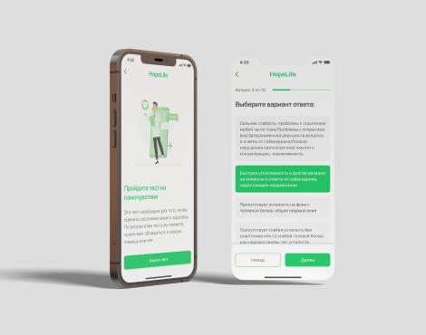

Дизайн приложения HopeLife
Дизайн

HopeLife – это проект, который помогает контролировать и поддерживать здоровье пациентов с хроническими заболеваниями. Этот проект актуален для таких пациентов, людей, кто ухаживает за ними, чтобы получить своевременные инструкции по уходу за пациентом, отслеживания здоровья.
Благодаря приложению врач может рекомендовать пациентам правильный уход и следить за их самочувствием. Приложение HopeLife содержит такие опции: Тест на самочувствие, Дневник, Таймер и Уход за пациентом. Они помогают врачам назначать диеты и лекарства, а пациенты могут вести учет своего здоровья, вовремя принимать лекарства благодаря таймерам.